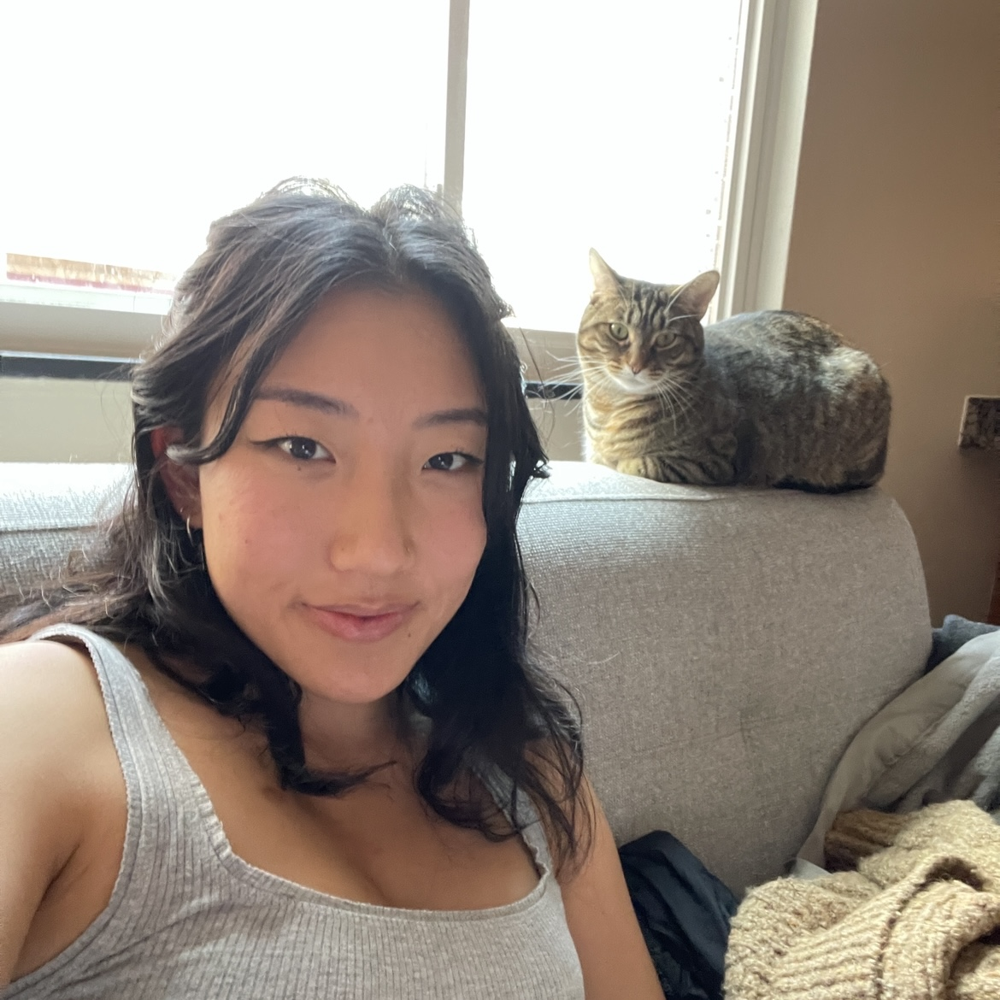

About

Hello! I'm Eileen, a second year master's student studying UX Research & Design at the University of Michigan.
For my final project in a web development course, I created this website to highlight my overall thoughts, favorite activities, and favorite restaurants while living in three different cities (Boston, Pittsburgh, and Ann Arbor) during 2023.